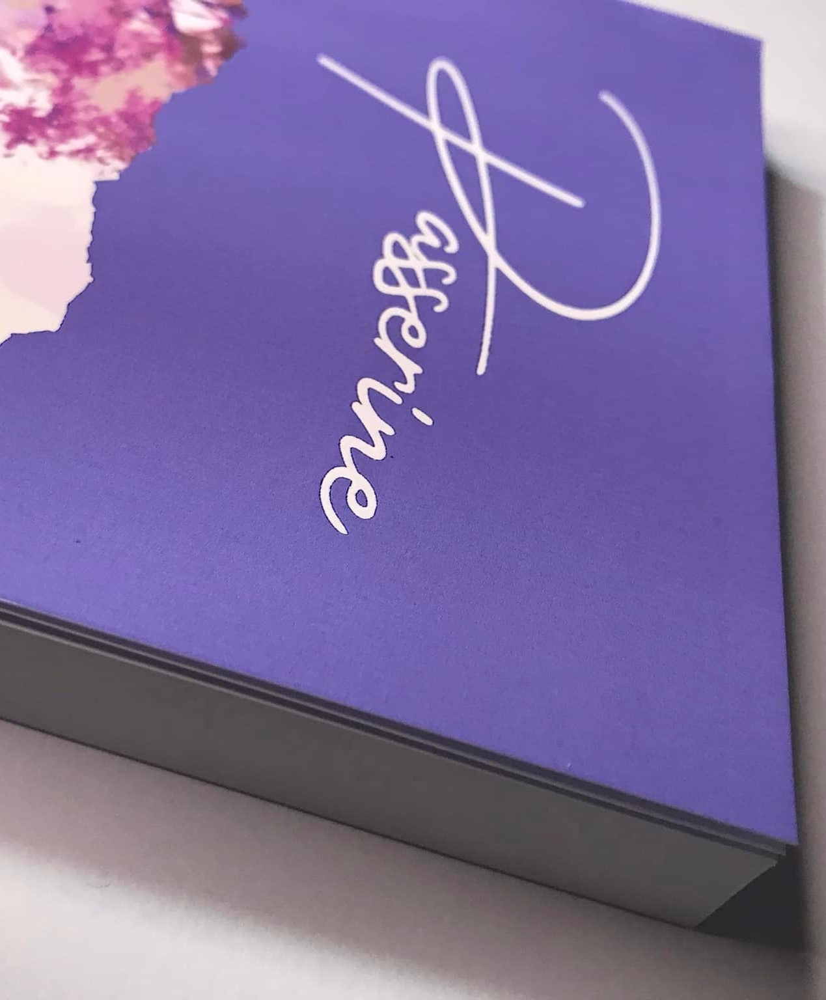
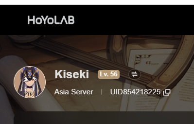

My Name is:Princess Jenny S.(Selarta) Nene I now live in :0152,Brgy Pritil, Guiguinto, Bulacan I use to live in: Negros Occidental Cadiz City I can speak in Hiligaynon |
I'm also particularly fond of writting and I am fairly confident with my talent with it Literature Holds a certain place in my heart as it gives me peace of mind, but then again understanding words is the first thing preventing you from being blind. |
I like Reading It's my favorite thing to do when I'm not gaming or writting. I also have a fondness to Fantasy and historical books, My favourite book is an underated one it's not very well known but I liked them so it doesnt really matter.My favourite book is called "Passerine". |
 |
|  | I also play Genshin Impact It's one of the games that I kept playing from time to time, I really liked the story/lore of the game. My Favorite Character is Xiao I main him. |